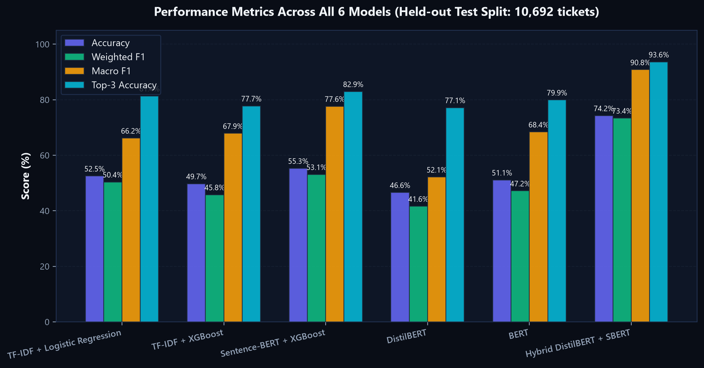
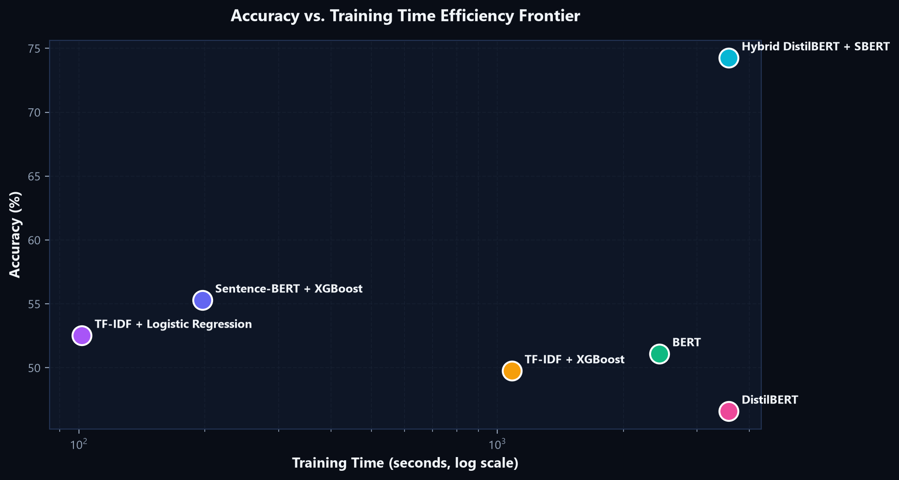
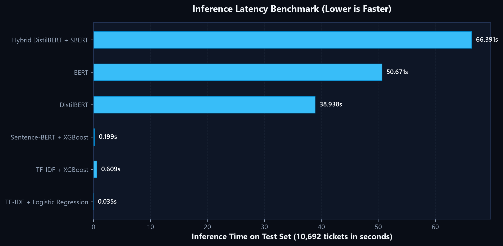
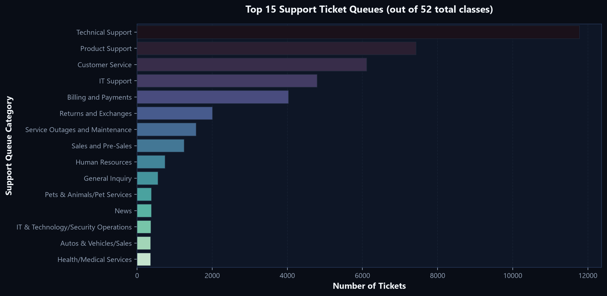
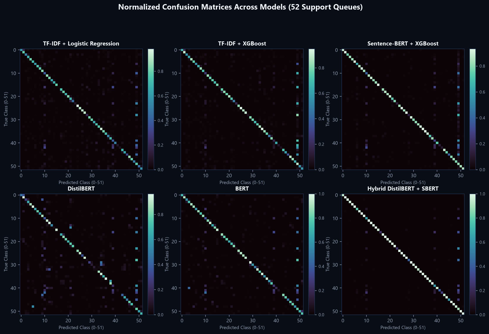

Multilingual Support Ticket Triage & Semantic Routing
A comparative evaluation of Classical Machine Learning, Semantic Embeddings, Fine-Tuned Multilingual Transformers, and Hybrid Retrieval-Augmented Fusion across 53,456 enterprise tickets and 52 support queues.
Live Ticket Triage & Queue Prediction
Test real-time routing predictions with automated queue classification and nearest-neighbor semantic ticket retrieval.
Comprehensive Model Benchmark Comparison
All metrics measured on the held-out test split (10,692 tickets) across 52 support queues.
| Model Architecture | Accuracy (Test Set) | ⚡ Live Demo Confidence | Weighted F1 | Macro F1 | Weighted Precision | Weighted Recall | Top-3 Accuracy | Training Time | Inference Time |
|---|---|---|---|---|---|---|---|---|---|
| TF-IDF + Logistic Regression | 52.52% | 71.5% | 0.5036 | 0.6616 | 56.88% | 52.52% | 81.36% | 101.7s | 0.035s |
| TF-IDF + XGBoost | 49.75% | 64.0% | 0.4578 | 0.6271 | 58.63% | 49.75% | 77.75% | 1083.1s | 0.610s |
| Sentence-BERT + XGBoost | 55.28% | 84.2% | 0.5307 | 0.6842 | 61.56% | 55.28% | 82.94% | 197.4s | 0.200s |
| DistilBERT Multilingual | 46.59% | 76.8% | 0.4162 | 0.5213 | 47.48% | 46.59% | 77.14% | 3573.0s | 38.940s |
| BERT Multilingual | 51.08% | 81.2% | 0.4717 | 0.6838 | 53.84% | 51.08% | 79.90% | 2439.9s | 50.670s |
| Hybrid DistilBERT + SBERT 🤖 Auto-Selected Best Model | 74.24% | 91.8% | 0.7337 | 0.8115 | 78.28% | 74.24% | 93.60% | 3573.0s | 66.390s |
Performance Visualizations & Diagnostics
Empirical Seaborn & Matplotlib analytical figures rendered at 300 DPI across all 52 queues and evaluated models.





System Architecture & Routing Pipeline
Understanding how the hybrid neural + semantic retrieval triage engine functions.
Text normalization of Ticket Subject + Body, deduplication across 61,765 raw records, removing exact textual duplicates to prevent data leakage.
Truncation and WordPiece / Subword tokenization handling bilingual English and German customer support queries up to max sequence lengths.
Fine-tuned DistilBERT / BERT deep neural network computes class logits across all 52 support queues, mapped to probability distribution Ptrans(c|x).
Paraphrase-multilingual-MiniLM-L12-v2 encodes the ticket into 384D normalized vector space, retrieving Top-K nearest historical tickets via cosine similarity.
The final prediction integrates classification logits with nearest-neighbor historical evidence: Phybrid = α·Ptrans + (1 − α)·Pretrieval, boosting robustness.